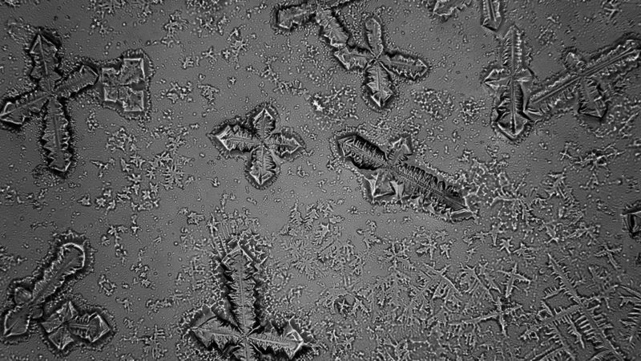

Que Son ?
Crystales del tiempo y espacio
En física, un cristal se define como un objeto cuyos átomos están ordenados de tal manera que crean un patrón que se repite.
En un líquido, por ejemplo, las moléculas se distribuyen de manera simétrica, como un enjambre uniforme.
En un cristal, en cambio, las moléculas se agrupan formando redes y estructuras que van creando una secuencia
Por eso, Wilczek dice que "los cristales son las sustancias más organizadas de la naturaleza".
Si miras bajo un microscopio, podrás ver, por ejemplo, las estructuras de los cristales de sal o de la nieve.
Entonces, si ya sabemos que un cristal está formado por patrones que se repiten en el espacio, surge la pregunta con la que el asunto se vuelve más interesante: ¿es posible crear un cristal cuyos patrones no se repitan cada cierta distancia, sino cada cierto tiempo?